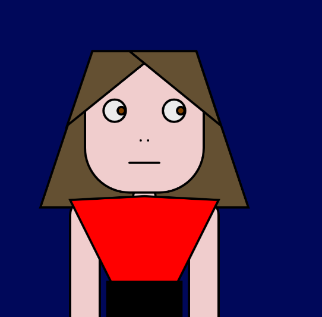

Retrato
Un Autoretrato hecho a base de figuras geometricas y con una mirada sospechosa.
A base de nuestra voz se van generando 4 espirales y su expancion depende de lo fuerte que hablemos. Con el tiempo este ira retocediendo.
Un Autoretrato hecho a base de figuras geometricas y con una mirada sospechosa.
A base de unos sliders un grupo de circunferencias pueden crecer o achicarse, ademas de poder cambiar su forma hasta una secuencia de cuadrados.
A medida que pasa el tiempo se va generando un espiral a base de puntos de variados colores y un slider tiene control sobre el angulo de este espiral hasta el punto que este genere un ciruclo.
Dentro de la investigacion para hacer un visualizador de sonido se llego a este sketch donde se imita el movimineto de las ondas.
A una circunferecia se le aplica un "loop" donde cada uno de estos circulos disminuye su radio y con un slider se puede variar la posicion de cada uno de estos.
Un trabajo donde se representa la atraccion y aversión a base de circunferencias en constante movimiento. Con un clic se genera una particula atractora haciendo que estas circunferencias se acerquen y con cualquier tecla del teclado se genera un retractor las cuales repelen a las circunferencias.